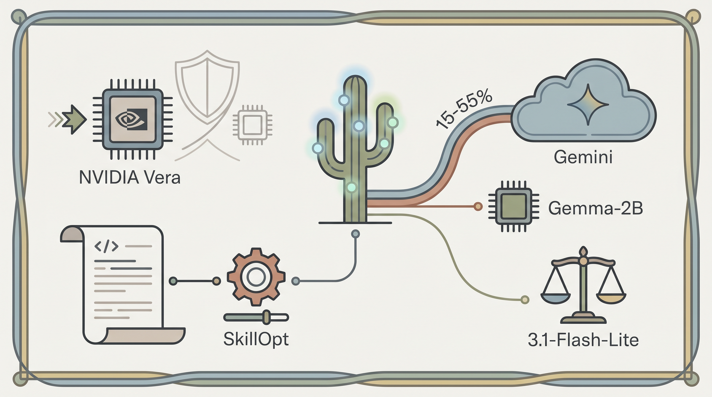

Fujitsu与Anthropic合作推出自进化AI代理，将自主代理能力引入企业CX系统，对人类介入式企业AI模式形成挑战。
两克伴AIGC日报
2026-05-27 星期三

本期关注：**富士通与Anthropic对人类参与的CX模式发出警示 - CX Today**、Google I/O 2026：科技巨头开启自主AI时代，以核心业务为代价变革搜索 - ynetnews、小米大模型永久降价99%，正面对标DeepSeek？、程一笑：可灵AI 3月ARR近5亿美元，较去年同期增长4倍
📰 行业动态
Google在I/O 2026发布Gemini代理并推出生成式搜索改革，以牺牲核心搜索广告收入为代价直接对标OpenAI和Perplexity，正式开启自主AI时代。
小米宣布大模型永久降价99%，直接对标DeepSeek的价格策略，标志着小米正式入局大模型竞争赛道。
🔥 今日焦点
快手的可灵AI（Kling AI）交出了一份相当炸裂的成绩单。在2026年Q1业绩电话会上，CEO程一笑透露，2026年3月可灵AI的年化收入运行率（ARR）已经逼近5亿美元，而去年同期这个数字还只有1亿美元——意味着一年时间增长了整整4倍。这个增长是由B端企业客户API调用和C端付费会员订阅双轮驱动的，而且两类用户的留存率都表现稳健。从用户数到月均付费金额都在高速增长，可灵AI正在成为中国AI应用商业化的一个标杆案例。相比很多还在烧钱找商业化路径的竞争对手，快手显然已经率先跑通了这条路。
---
激光雷达公司速腾聚创刚刚发布的Q1财报里藏着一个重要的结构性变化信号。期内总营收约4.6亿元，同比增长40%；激光雷达总销量达33万台，同比暴增204%。但真正值得注意的是：机器人业务销量达到18.5万台，同比暴涨1458.8%，占总销量比重从去年同期的11%跃升至56%——这是机器人业务首次超越ADAS（辅助驾驶）业务，成为公司最大的收入来源。一个原本以车载激光雷达著称的企业，机器人业务在短短一年内占比从一成多飙升到超过一半，这个转变的幅度和速度都相当惊人。从L4自动驾驶到各类服务机器人、工业机器人，激光雷达作为“机器人之眼”的定位正在快速成型。
📚 深度长文
当85%的企业都宣称要在三年内实现agentic转型，却发现76%的现有基础设施根本无法支撑这种转变——这才是AI Agent在企业落地的真实困境。这篇来自MIT Technology Review的深度分析，不仅揭示了雄心与现实之间的巨大鸿沟，更深入探讨了为什么技术采购的便捷性反而可能成为组织变革的阻力，以及在 agentic AI 时代，企业需要从根本上重构的组织设计逻辑。对于正在规划AI落地的管理者来说，这篇文章的价值在于它不是教你"怎么用Agent"，而是揭示了一个更根本的问题——当工具的能力超越组织的承载能力时，变革该从哪里开始。
---
设计agentic系统最大的挑战，不是让它完成任务，而是防止它被滥用——Simon Willison在拆解Microsoft Copilot Cowork的安全漏洞时，给出了这个看似简单却至关重要的结论。这篇技术分析详细记录了一个Copilot功能如何被设计得"过于好用"，以至于成为数据泄露的完美渠道：从文件读取、上下文理解到执行动作，每个环节都暗藏风险。作者没有止步于披露漏洞，而是通过这个案例引出了一个根本性的设计哲学问题——当AI Agent获得了访问敏感数据的权限，我们现有的安全模型是否已经彻底失效？这篇文章对任何正在构建LLM应用或AI Agent的开发者来说，都是一记清醒的警钟。
🐦 Ta们说
> "Founders must stop trying to building 2010-era businesses with 2026-era technology.
Don't try to rebuild Foursquare or Yelp.
> "AI brings ghostwriting to the masses and you can expect the works to be equally good."
**解读**: Naval这句短是亮点：AI把"枪手代笔"这件事民主化了，以后人人都能写出一样好的东西。听起来有点反乌托邦，但确实道出了AI写作工具的本质——抹平写作质量的门槛。对内容创作者来说是个警醒：单纯输出文字会越来越不值钱，独特思考和洞察才是稀缺品。
📄 重点论文
**核心贡献**: Maat是一个专为竞争法领域设计的AI代理法律研究助手，旨在解决通用大模型和通用法律助手在竞争法和并购案件分析中的不足。该系统具备专业领域知识，能够提供充分的官方引用，针对竞争法特有的案例、法规和司法报告进行深度研究，帮助专家识别判例和评估关键要素。
**与AI Agent的关联**: 该论文直接展示了AI Agent在垂直领域的应用范式，将自主智能体技术与法律专业领域深度结合。作为代理系统（Agentic System），Maat体现了AI Agent在专业化任务执行中的能力，对法律、医疗等领域的Agent应用具有重要参考价值和示范意义。
🛠️ 产品推荐
这是一款针对Claude Code的创新性Prompt增强框架，通过模拟ADHD（注意力缺陷多动障碍）思维方式，显著提升AI模型的思考深度和创造力。
产品核心在于重新定义AI的认知路径，使其能够在问题解决过程中实现更广泛的联想和更深入的探索。通过独特的思维引导机制，Claude Code现在能够同时考虑多个维度的解决方案，避免陷入单一思维定式，从而在复杂编程任务中表现出更强的创新能力。
# Claude会话恢复工具
Resume Claude Code without replaying your whole session 是一款针对 Claude Code 用户开发的会话管理工具，旨在帮助开发者解决长时间编程项目中会话中断后的上下文恢复难题。